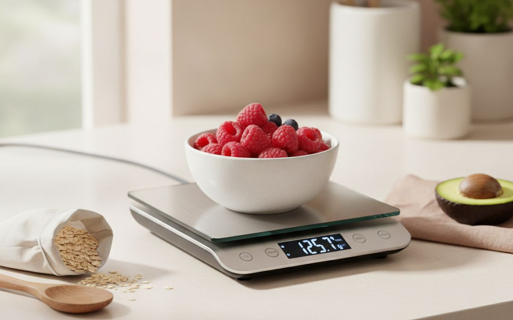
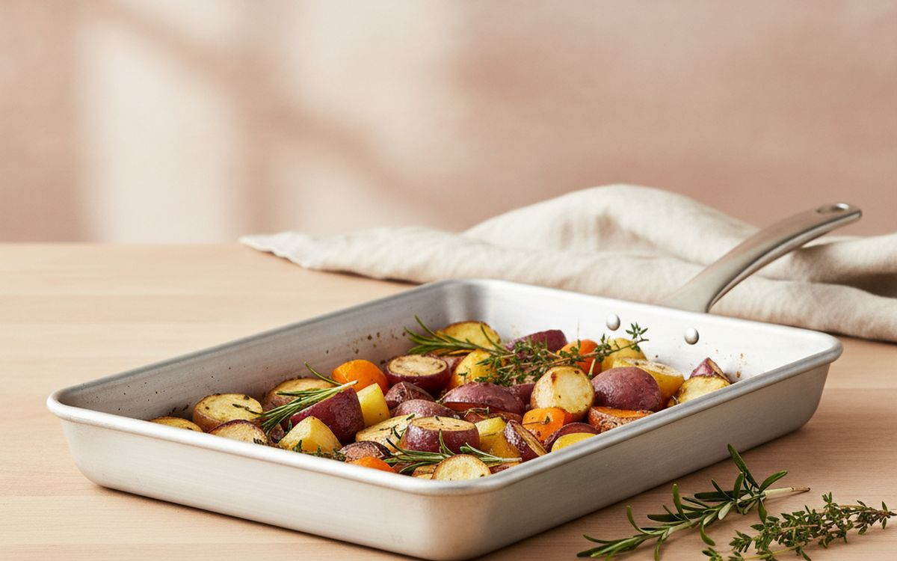
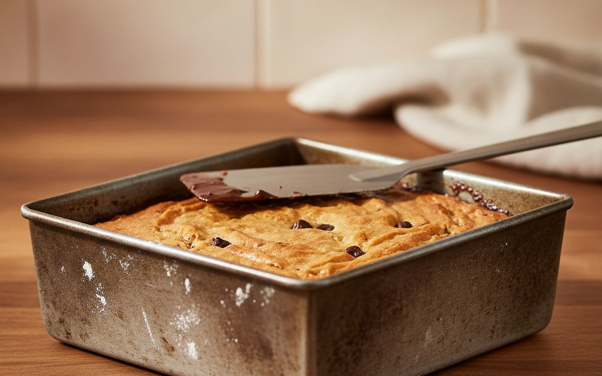
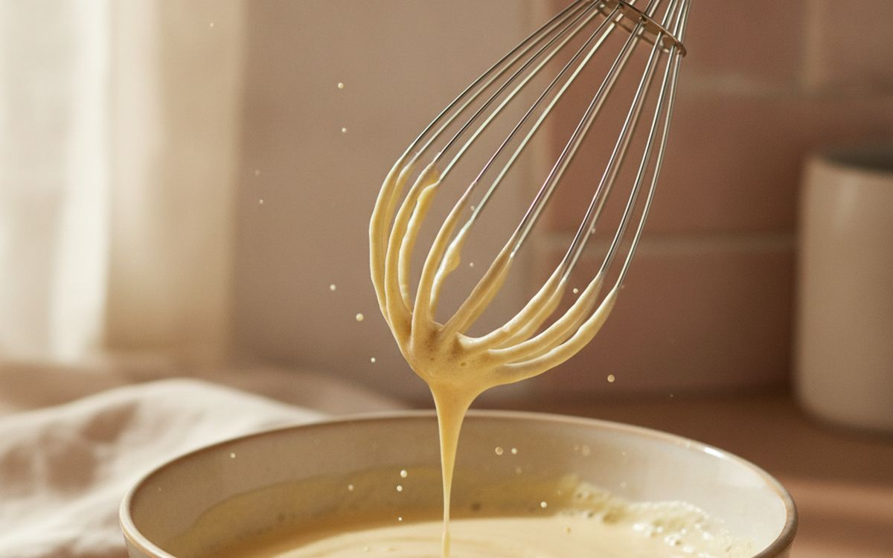
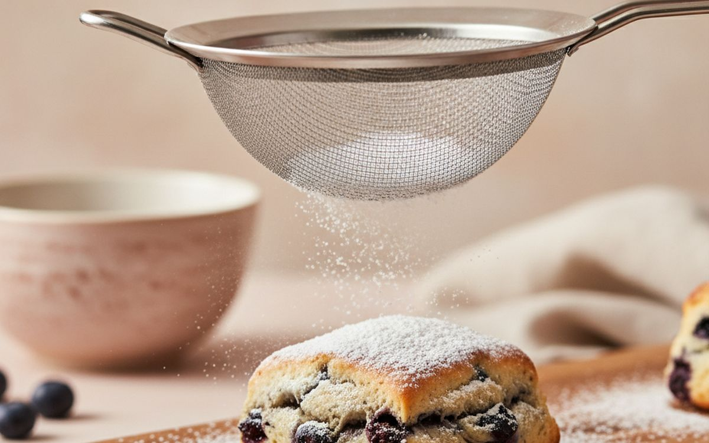
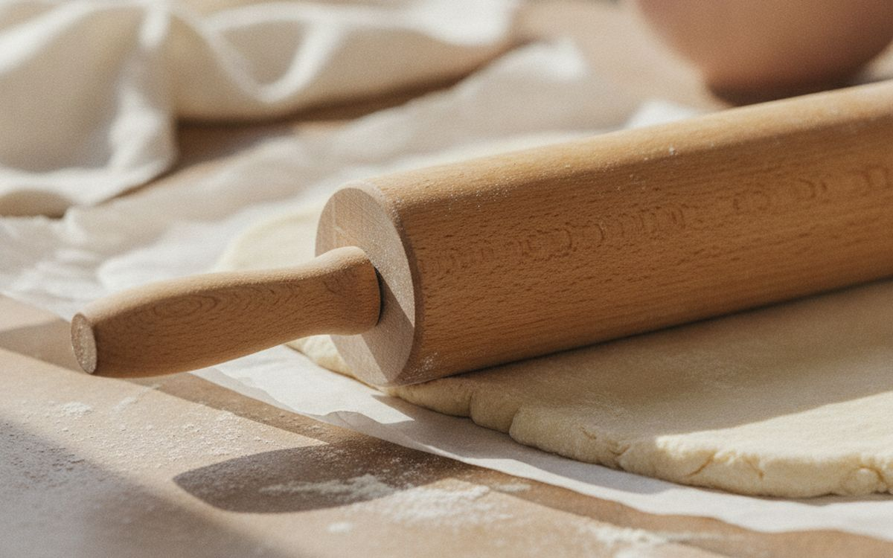
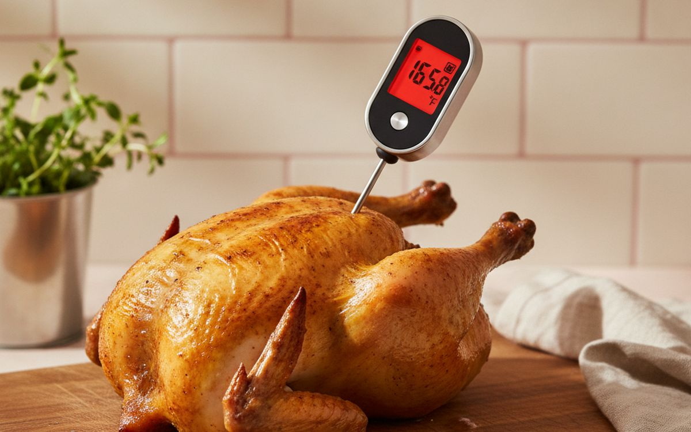
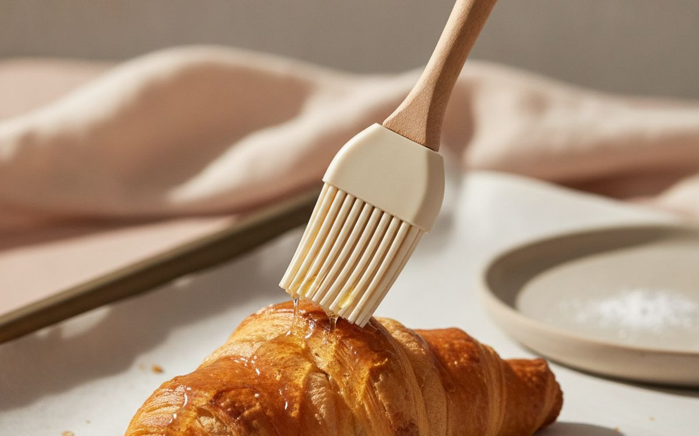
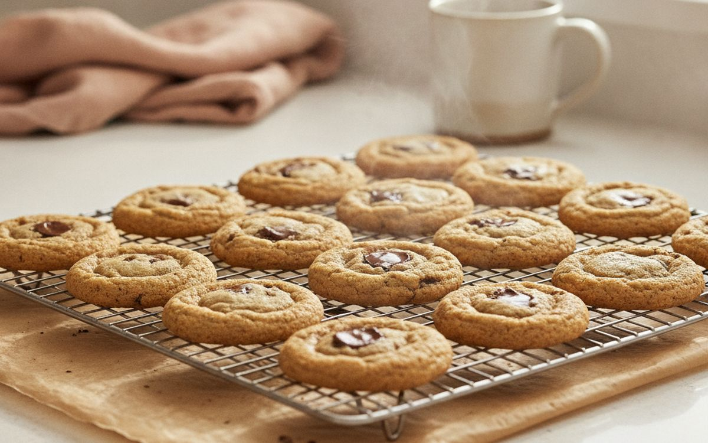

Ten basics before decorative gadgets. That sounds simple, but this category attracts products designed to photograph well rather than work well. The useful test is whether an item solves a repeated problem, lasts long enough to justify its price, and remains easy to live with after the first week.
This guide concentrates on those practical gains. We favour understandable products over feature lists, repairable or replaceable parts over sealed novelty, and a modest item used every week over an impressive one left in a cupboard. Prices are approximate at the time of writing and change often.
One honest limit: these are researched buying recommendations based on specifications, established safety guidance where relevant, and long-run owner patterns. They are not claims that every model has been personally tested. Fit, taste and individual needs remain personal, and where that matters we say so.
The short version
A digital kitchen scale
THE PLACE TO START
Disclosure. The links on this page are affiliate links. If you buy through one we may earn a commission at no extra cost to you. It does not affect what makes this list or the order it is in.
How we picked
We looked for products that solve a clear problem, are easy to understand and maintain, and have enough useful life to beat a cheaper disposable alternative. We checked materials, dimensions and the return policy, gave extra weight to warranties and common replacement parts, and marked the compromises instead of hiding them.
At a glance
Prices are approximate at the time of writing and change often.
The picks

01 · THE PLACE TO STARTA digital kitchen scale
A digital kitchen scale earns a place because it addresses a specific, recurring problem instead of inventing a new routine. The best version is usually the one with straightforward controls, sensible construction and no unnecessary subscription or proprietary accessory. Before buying, check materials, dimensions and the return policy. A good listing should make those details clear; vague measurements and promises without specifications are a reason to move on. The case for it: solves a repeat problem rather than a one-off inconvenience, available in simple versions without paying for decorative extras, and easy to compare on useful specifications. The trade-off is real: quality varies sharply by maker and measure the space, check compatibility and read the return terms before ordering, so weigh that against how often it would actually get used.
$15–40Trade-off: Quality varies sharply by maker
Why it is here
- Solves a repeat problem rather than a one-off inconvenience
- Available in simple versions without paying for decorative extras
- Easy to compare on useful specifications
Worth knowing
- Quality varies sharply by maker
- Measure the space, check compatibility and read the return terms before ordering

02 · THE EVERYDAY UPGRADEA heavy aluminium sheet pan
A heavy aluminium sheet pan earns a place because it addresses a specific, recurring problem instead of inventing a new routine. The best version is usually the one with straightforward controls, sensible construction and no unnecessary subscription or proprietary accessory. Before buying, check the warranty and availability of replacement parts. A good listing should make those details clear; vague measurements and promises without specifications are a reason to move on. The case for it: solves a repeat problem rather than a one-off inconvenience, available in simple versions without paying for decorative extras, and easy to compare on useful specifications. The trade-off is real: check dimensions before ordering and measure the space, check compatibility and read the return terms before ordering, so weigh that against how often it would actually get used.
$25–70Trade-off: Check dimensions before ordering
Why it is here
- Solves a repeat problem rather than a one-off inconvenience
- Available in simple versions without paying for decorative extras
- Easy to compare on useful specifications
Worth knowing
- Check dimensions before ordering
- Measure the space, check compatibility and read the return terms before ordering

03 · SMALL CHANGE, REAL GAINA 23cm square baking tin
A 23cm square baking tin earns a place because it addresses a specific, recurring problem instead of inventing a new routine. The best version is usually the one with straightforward controls, sensible construction and no unnecessary subscription or proprietary accessory. Before buying, check whether the controls are easy to use. A good listing should make those details clear; vague measurements and promises without specifications are a reason to move on. The case for it: solves a repeat problem rather than a one-off inconvenience, available in simple versions without paying for decorative extras, and easy to compare on useful specifications. The trade-off is real: the cheapest version is rarely the best value and measure the space, check compatibility and read the return terms before ordering, so weigh that against how often it would actually get used.
$40–120Trade-off: The cheapest version is rarely the best value
Why it is here
- Solves a repeat problem rather than a one-off inconvenience
- Available in simple versions without paying for decorative extras
- Easy to compare on useful specifications
Worth knowing
- The cheapest version is rarely the best value
- Measure the space, check compatibility and read the return terms before ordering

04 · BUILT FOR REPEAT USEA balloon whisk
A balloon whisk earns a place because it addresses a specific, recurring problem instead of inventing a new routine. The best version is usually the one with straightforward controls, sensible construction and no unnecessary subscription or proprietary accessory. Before buying, check independent owner reports after six months or more. A good listing should make those details clear; vague measurements and promises without specifications are a reason to move on. The case for it: solves a repeat problem rather than a one-off inconvenience, available in simple versions without paying for decorative extras, and easy to compare on useful specifications. The trade-off is real: needs occasional cleaning or maintenance and measure the space, check compatibility and read the return terms before ordering, so weigh that against how often it would actually get used.
$60–180Trade-off: Needs occasional cleaning or maintenance
Why it is here
- Solves a repeat problem rather than a one-off inconvenience
- Available in simple versions without paying for decorative extras
- Easy to compare on useful specifications
Worth knowing
- Needs occasional cleaning or maintenance
- Measure the space, check compatibility and read the return terms before ordering
05 · THE VALUE PICKA flexible silicone spatula
A flexible silicone spatula earns a place because it addresses a specific, recurring problem instead of inventing a new routine. The best version is usually the one with straightforward controls, sensible construction and no unnecessary subscription or proprietary accessory. Before buying, check the total size once it is stored. A good listing should make those details clear; vague measurements and promises without specifications are a reason to move on. The case for it: solves a repeat problem rather than a one-off inconvenience, available in simple versions without paying for decorative extras, and easy to compare on useful specifications. The trade-off is real: takes up some storage space and measure the space, check compatibility and read the return terms before ordering, so weigh that against how often it would actually get used.
$20–55Trade-off: Takes up some storage space
Why it is here
- Solves a repeat problem rather than a one-off inconvenience
- Available in simple versions without paying for decorative extras
- Easy to compare on useful specifications
Worth knowing
- Takes up some storage space
- Measure the space, check compatibility and read the return terms before ordering

06 · FOR THE REGULAR USERA fine-mesh sieve
A fine-mesh sieve earns a place because it addresses a specific, recurring problem instead of inventing a new routine. The best version is usually the one with straightforward controls, sensible construction and no unnecessary subscription or proprietary accessory. Before buying, check whether consumables are proprietary. A good listing should make those details clear; vague measurements and promises without specifications are a reason to move on. The case for it: solves a repeat problem rather than a one-off inconvenience, available in simple versions without paying for decorative extras, and easy to compare on useful specifications. The trade-off is real: not every household needs one and measure the space, check compatibility and read the return terms before ordering, so weigh that against how often it would actually get used.
$80–250Trade-off: Not every household needs one
Why it is here
- Solves a repeat problem rather than a one-off inconvenience
- Available in simple versions without paying for decorative extras
- Easy to compare on useful specifications
Worth knowing
- Not every household needs one
- Measure the space, check compatibility and read the return terms before ordering

07 · KEEP IT SIMPLEA rolling pin
A rolling pin earns a place because it addresses a specific, recurring problem instead of inventing a new routine. The best version is usually the one with straightforward controls, sensible construction and no unnecessary subscription or proprietary accessory. Before buying, check the weight and how it will be carried. A good listing should make those details clear; vague measurements and promises without specifications are a reason to move on. The case for it: solves a repeat problem rather than a one-off inconvenience, available in simple versions without paying for decorative extras, and easy to compare on useful specifications. The trade-off is real: returns can be awkward and measure the space, check compatibility and read the return terms before ordering, so weigh that against how often it would actually get used.
$12–35Trade-off: Returns can be awkward
Why it is here
- Solves a repeat problem rather than a one-off inconvenience
- Available in simple versions without paying for decorative extras
- Easy to compare on useful specifications
Worth knowing
- Returns can be awkward
- Measure the space, check compatibility and read the return terms before ordering

08 · LESS CLUTTER, MORE USEAn instant-read thermometer
An instant-read thermometer earns a place because it addresses a specific, recurring problem instead of inventing a new routine. The best version is usually the one with straightforward controls, sensible construction and no unnecessary subscription or proprietary accessory. Before buying, check how easily it can be cleaned. A good listing should make those details clear; vague measurements and promises without specifications are a reason to move on. The case for it: solves a repeat problem rather than a one-off inconvenience, available in simple versions without paying for decorative extras, and easy to compare on useful specifications. The trade-off is real: a simpler version may work just as well and measure the space, check compatibility and read the return terms before ordering, so weigh that against how often it would actually get used.
$30–90Trade-off: A simpler version may work just as well
Why it is here
- Solves a repeat problem rather than a one-off inconvenience
- Available in simple versions without paying for decorative extras
- Easy to compare on useful specifications
Worth knowing
- A simpler version may work just as well
- Measure the space, check compatibility and read the return terms before ordering

09 · THE SPECIALIST OPTIONA reusable pastry brush
A reusable pastry brush earns a place because it addresses a specific, recurring problem instead of inventing a new routine. The best version is usually the one with straightforward controls, sensible construction and no unnecessary subscription or proprietary accessory. Before buying, check the stated safety standard and instructions. A good listing should make those details clear; vague measurements and promises without specifications are a reason to move on. The case for it: solves a repeat problem rather than a one-off inconvenience, available in simple versions without paying for decorative extras, and easy to compare on useful specifications. The trade-off is real: availability changes quickly and measure the space, check compatibility and read the return terms before ordering, so weigh that against how often it would actually get used.
$50–150Trade-off: Availability changes quickly
Why it is here
- Solves a repeat problem rather than a one-off inconvenience
- Available in simple versions without paying for decorative extras
- Easy to compare on useful specifications
Worth knowing
- Availability changes quickly
- Measure the space, check compatibility and read the return terms before ordering

10 · THE USEFUL EXTRAA cooling rack
A cooling rack earns a place because it addresses a specific, recurring problem instead of inventing a new routine. The best version is usually the one with straightforward controls, sensible construction and no unnecessary subscription or proprietary accessory. Before buying, check whether it replaces something you already own. A good listing should make those details clear; vague measurements and promises without specifications are a reason to move on. The case for it: solves a repeat problem rather than a one-off inconvenience, available in simple versions without paying for decorative extras, and easy to compare on useful specifications. The trade-off is real: the benefit depends on using it consistently and measure the space, check compatibility and read the return terms before ordering, so weigh that against how often it would actually get used.
$10–45Trade-off: The benefit depends on using it consistently
Why it is here
- Solves a repeat problem rather than a one-off inconvenience
- Available in simple versions without paying for decorative extras
- Easy to compare on useful specifications
Worth knowing
- The benefit depends on using it consistently
- Measure the space, check compatibility and read the return terms before ordering
Common questions
Should I buy the cheapest option?
Usually not. The bottom of a category often saves money by using weaker fittings, shorter warranties or parts that cannot be replaced. The right target is the simplest product that meets the real need, not the lowest visible price.
When is the best time to buy?
Watch the normal price for a few weeks if the purchase is not urgent. A percentage badge is not evidence of a deal. Compare the exact model number, shipping cost, warranty and return fee before deciding.
Is used or refurbished reasonable?
Often, especially for durable goods with parts you can inspect. Avoid used safety equipment, hygiene-sensitive products and anything with hidden battery wear unless it comes with testing, a meaningful warranty and an easy return route.
What should I check when it arrives?
Open it within the return window. Confirm dimensions and included parts, inspect for damage, test every control, and keep the packaging until you know it works in the place and routine you bought it for.
Today's deals
See what is discounted right now.
Deals →← All guides
As an AliExpress affiliate we earn from qualifying purchases. Prices and availability are accurate as of the date of publication and may change.